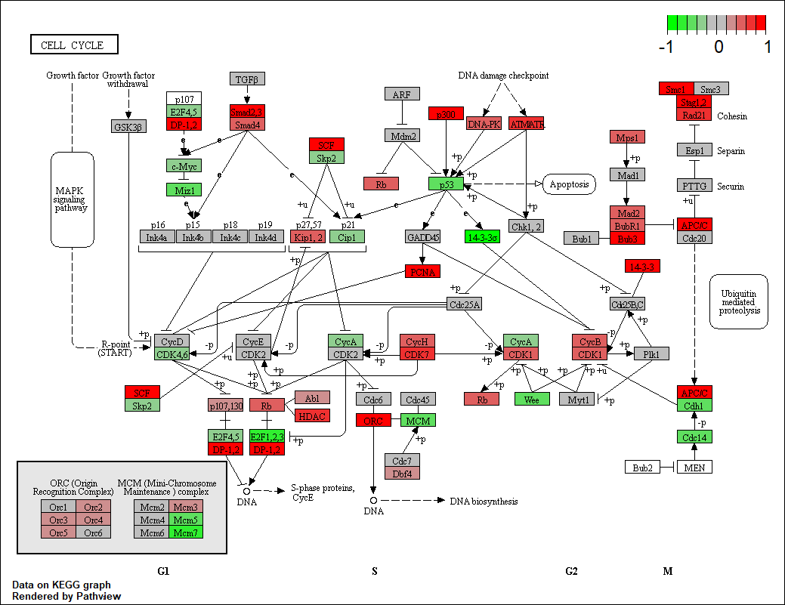

Introduction
KEGG（Kyoto Encyclopedia of Genes and Genomes）是一个广泛使用的生物信息学数据库，用于研究基因组、代谢组、信号通路和生物化学反应等方面的信息。它提供了基因、蛋白质、代谢物和信号通路等生物分子的综合信息，帮助研究人员理解生物体内分子之间的相互作用和功能。
之前的文章详细介绍了KEGG 数据库及API的基础使用。其中KEGG pathway是我们经常需要使用的功能之一，它提供了生物体内代谢通路和信号传导通路的详细信息。
使用KEGG官网提供的绘图功能或者R包pathview可以绘制下面这种KEGG通路图，但这些方法通常只能处理单个通路，且绘图功能较为简单：

为了更好地处理和可视化KEGG通路网络，我们尝试获取KEGG pathway的网络结构然后用MetaNet绘制，因为涉及到KEGG通路的一些函数我之前已经在ReporterScore包中实现了，所以我这次把通路网络的获取和绘图功能放在了ReporterScore包中，但背后调用的还是MetaNet包的绘图功能。
可以从 CRAN 安装稳定版：install.packages("MetaNet")
最新的开发版本可以在 https://github.com/Asa12138/MetaNet 中找到：
1
2
|
remotes::install_github("Asa12138/MetaNet", dependencies = T)
remotes::install_github("Asa12138/ReporterScore", dependencies = T)
|
1
2
3
4
5
6
7
8
9
10
|
library(ReporterScore)
library(MetaNet)
tmp_dir <- tempdir()
# 下载KEGG通路XML文件
pcutils::download2("https://rest.kegg.jp/get/ko01521/kgml", file.path(tmp_dir, "ko01521.xml"))
# 读取KEGG通路XML文件
path_net_c <- c_net_from_pathway_xml(file.path(tmp_dir, "ko01521.xml"))
# 绘制KEGG通路网络图
plot_pathway_net(path_net_c)
|

我们也可以使用update_pathway_xml_ls()函数来获取或更新所有的KEGG通路XML文件。这个函数会下载最新的KEGG通路XML文件到指定的目录。
1
2
3
4
|
# org参数可以指定组织或物种，默认为NULL，表示获取所有通路
update_pathway_xml_ls(download_dir = "~/Documents/",org = NULL)
# 下载过一次之后，就可以用load_pathway_xml_ls获取KEGG通路
load_pathway_xml_ls()->pathway_xml_ls
|
想要给节点加上注释，并换上不同颜色，大小，布局等参数也非常简单，与之前介绍的MetaNet包的c_net_plot绘图参数完全一致的，可以查看3.网络注释与操作，4.布局和可视化。
1
2
3
4
5
6
7
8
9
10
11
12
|
# 调整一下布局
coors=get_v(path_net_c)[,c("name","x","y")]
colnames(coors)=c("name","X","Y")
coors=rescale_coors(as_coors(coors))
coors=transform_coors(coors,aspect_ratio = 0.6) # 调整纵横比
plot_pathway_net(path_net_c,coors=coors, label_cex=0.6,
vertex.color=c("#a6cee3", "#78c679"),
vertex.frame.width=0.2,
arrow_size_cex=2,arrow_width_cex=2,
edge.width=0.5)
|

添加注释文件，比如基因上调和下调信息。
1
2
3
4
5
6
7
8
9
10
11
12
13
14
|
# 添加注释信息
anno_df=data.frame(
name=V(path_net_c)$name,
Group=sample(c("Up","None","Down"),vcount(path_net_c),replace = TRUE)
)
path_net_c=c_net_set(path_net_c,anno_df,vertex_class = "Group")
# "#FFFFFF00"是透明色
pal=setNames(c("#92C5DE","#FFFFFF00","#D6604D"),c("Down","None","Up"))
plot_pathway_net(path_net_c,coors=coors, label_cex=0.6,
vertex.color=pal,
vertex.frame.width=0.2,arrow_size_cex=2,arrow_width_cex=2,
edge.width=0.5)
|

还可以使用MetaNet对网络进行各种操作筛选，比如我想获取某个基因的下游网络：
1
2
3
4
5
6
7
8
9
10
11
12
13
|
## name _type type reaction graphics_name x y width height fgcolor
## 1 ko:K04357 from ortholog <NA> K04357 155 -247 46 17 #000000
## 2 ko:K08774 from ortholog <NA> K08774 155 -271 46 17 #000000
## 3 ko:K05460 from ortholog <NA> K05460 155 -530 46 17 #000000
## bgcolor graphics_type coords xmin xmax ymin ymax orig.id pathway_id
## 1 #BFBFFF rectangle NA 132 178 -255.5 -238.5 32 ko01521
## 2 #BFBFFF rectangle NA 132 178 -279.5 -262.5 20 ko01521
## 3 #BFBFFF rectangle NA 132 178 -538.5 -521.5 75 ko01521
## label size v_group shape v_class color Group
## 1 K04357 1 ortholog square None #fb9a99 None
## 2 K08774 1 ortholog square None #fb9a99 None
## 3 K05460 1 ortholog square Up #fdbf6f Up
## [ reached 'max' / getOption("max.print") -- omitted 50 rows ]
|
1
2
3
|
c_net_neighbors(path_net_c, nodes = "ko:K04456",order=2, mode = "out") -> path_net_c2
plot_pathway_net(path_net_c2,vertex.color=pal)
|

ggkegg
但目前MetaNet不支持一些巨大的代谢网络如ko01100，因为其xml文件不是标准网络信息，可以使用更强大的ggkegg包来绘制，代码稍微复杂一点：
ggkegg是一个基于ggplot2的KEGG通路绘图包，提供了更灵活的绘图功能和更美观的图形输出。它可以处理更复杂的KEGG通路数据，并支持多种自定义样式。
https://github.com/noriakis/ggkegg
1
2
3
4
5
6
7
8
9
10
11
12
13
14
15
16
17
18
19
20
21
22
23
24
25
26
27
28
29
30
31
32
33
|
library(ggkegg)
library(ggfx)
library(igraph)
library(tidygraph)
library(dplyr)
pathway("ko01100") |>
process_line() |>
highlight_module(module("M00021")) |>
highlight_module(module("M00338")) |>
ggraph(x=x, y=y) +
geom_node_point(size=1, aes(color=I(fgcolor),
filter=fgcolor!="none" & type!="line")) +
geom_edge_link0(width=0.1, aes(color=I(fgcolor),
filter=type=="line"& fgcolor!="none")) +
with_outer_glow(
geom_edge_link0(width=1,
aes(color=I(fgcolor),
filter=(M00021 | M00338))),
colour="red", expand=5
) +
with_outer_glow(
geom_node_point(size=1.5,
aes(color=I(fgcolor),
filter=(M00021 | M00338))),
colour="red", expand=5
) +
geom_node_text(size=2,
aes(x=x, y=y,
label=graphics_name,
filter=name=="path:ko00270"),
repel=TRUE, family="sans", bg.colour="white") +
theme_void()
|
References
- https://github.com/noriakis/ggkegg
- https://github.com/datapplab/pathview